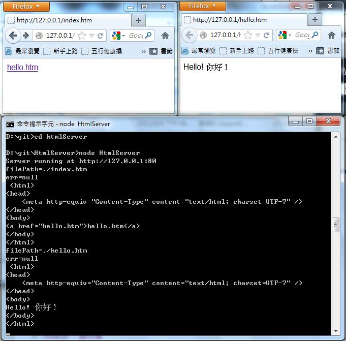

Node.js -- Web 程式
第一個 Web 程式
程式：HelloWeb.js
var http = require('http');
http.createServer(function (req, res) {
res.writeHead(200, {'Content-Type': 'text/plain'});
res.end('Hello Node.js!\n');
}).listen(80, '127.0.0.1');
console.log('Server running at http://127.0.0.1:80/');
執行結果
D:\ccc101\nodejs>node WebHello.js
Server running at http://127.0.0.1:80/

HtmlServer
執行結果：

var server,
ip = "127.0.0.1",
port = 80,
http = require('http'),
fs = require("fs"),
folderPath = ".",
url = require('url'),
path,
filePath,
encode = "utf8";
server = http.createServer(function (req, res) {
path = url.parse(req.url);
filePath = folderPath + path.pathname;
console.log("filePath="+filePath);
fs.readFile(filePath, encode, function(err, file) {
console.log("err="+err);
if (err) {
res.writeHead(404, {'Content-Type': 'text/plain'});
res.end();
return;
}
res.writeHead(200, {'Content-Type': 'text/html'});
res.write(file);
console.log(file);
res.end();
});
});
server.listen(port, ip);
console.log("Server running at http://" + ip + ":" + port);
簡易 WebServer
由於 node.js 採用 Event Queue 的方式執行 (類似 Win3.1 中的協同式多工)，而沒有採用 Thread 的方式，因此對所有 輸出入 IO 都應該盡可能採用非同步的方式執行，這樣才能讓 node.js 程式發揮最大的效能，否則就會因為 IO 而卡住。
因此以下兩個版本當中，以非同步版速度較快。
簡易 WebServer ：同步版 (效能較差，不符合 node.js 的設計理念)
var path = require('path');
var fs = require("fs");
var qs = require('querystring');
var express = require("express");
var app = express();
app.listen(80);
var response = function(res, type, text) {
res.writeHead(200, {'Content-Type': type});
res.write(text);
console.log(text);
res.end();
}
app.get('*', function(req, res){
try {
var path = '.' + req.url;
fs.stat(path, function(err, pathStat) {
if (err) {
response(res, "text/plain", err.toString());
return;
}
if (pathStat.isFile()) {
fs.readFile(path, "utf8", function(err, file) {
response(res, "text/html", file);
});
} else if (pathStat.isDirectory()) {
var dirPath = req.url;
if (dirPath.substring(-1)!=="/")
dirPath = dirPath+"/";
var html = "<html><body><h1>"+req.url+"</h1>\n";
fs.readdir(path, function(err, files) {
for (f in files) {
fname = files[f];
filePath = dirPath+fname;
html += "<li><a href='"+filePath+"'>"+fname+"</a></li>\n";
}
html += "<body></html>";
response(res, "text/html", html);
});
}
});
} catch (err) {
response(res, "text/plain", err.toString());
}
});
console.log('start WebServer\n');
簡易 WebServer ：非同步版 (效能較好，符合 node.js 的設計理念)
var path = require('path');
var fs = require("fs");
var qs = require('querystring');
var express = require("express");
var app = express();
app.listen(80);
var response = function(res, type, text) {
res.writeHead(200, {'Content-Type': type});
res.write(text);
console.log(text);
res.end();
}
app.get('*', function(req, res){
try {
var path = '.' + req.url;
fs.stat(path, function(err, pathStat) {
if (pathStat.isFile()) {
fs.readFile(path, "utf8", function(err, file) {
response(res, "text/html", file);
});
} else if (pathStat.isDirectory()) {
var html = "<html><body>";
fs.readdir(path, function(err, files) {
for (f in files) {
fname = files[f];
filePath = req.url+fname;
html += "<li><a href='"+filePath+"'>"
+filePath+"</a></li>\n";
}
html += "<body></html>";
response(res, "text/html", html);
});
}
});
} catch (err) {
response(res, "text/plain", err.toString());
}
});
console.log('start WebServer\n');
較完整的 WebServer (非同步版)
程式：WebServer2.js
var path = require('path');
var fs = require("fs");
var qs = require('querystring');
var express = require("express");
var app = express();
var mimeType = {
"jpg":"image/jpeg",
"gif":"image/gif",
"png":"image/png",
"svg":"image/svg",
"zip":"application/zip",
"pdf":"application/pdf",
"xls":"application/vnd.ms-excel",
"ppt":"application/vnd.ms-powerpoint",
"doc":"application/msword",
"htm":"text/html",
"html":"text/html"
};
function getMimeType(ext) {
var type = mimeType[ext];
if (!type)
return "text/plain";
else
return type;
}
app.listen(80);
var response = function(res, type, data) {
res.writeHead(200, {'Content-Type': type});
if (type.indexOf("text/")>=0)
res.end(data);
else
res.end(data, "binary");
}
app.get('*', function(req, res){
try {
var path = '.' + req.url;
fs.stat(path, function(err, pathStat) {
if (err) {
response(res, "text/plain", err.toString());
return;
}
if (pathStat.isFile()) {
fs.readFile(path, function(err, file) {
var tokens = path.split(".");
var ext = tokens[tokens.length-1];
response(res, getMimeType(ext), file);
});
} else if (pathStat.isDirectory()) {
var dirPath = req.url;
if (dirPath.substring(-1)!=="/")
dirPath = dirPath+"/";
var html = "<html><body><h1>"+req.url+"</h1>\n";
fs.readdir(path, function(err, files) {
for (f in files) {
fname = files[f];
filePath = dirPath+fname;
html += "<li><a href='"+filePath+"'>"+fname+"</a></li>\n";
}
html += "<body></html>";
response(res, "text/html", html);
});
}
});
} catch (err) {
response(res, "text/plain", err.toString());
}
});
console.log('start WebServer\n');
參考文獻
- 深入浅出Node.js相关的内容 -- http://www.infoq.com/cn/master-nodejs
- 深入浅出Node.js（一）：什么是Node.js -- http://www.infoq.com/cn/articles/what-is-nodejs
- 深入浅出Node.js（三）：深入Node.js的模块机制 -- http://www.infoq.com/cn/articles/nodejs-module-mechanism
編輯： 陳鍾誠 email: ccckmit@gmail.com